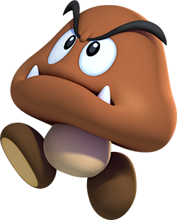

Goombas resemble small brown mushrooms and are a fungus-based species like Toads, Amanitas, Spooks, and Shroobs. Goombas are physically weak and are not much of a threat to Mario or Luigi, since a single stomp usually defeats them, although a number of different Goomba variants have emerged throughout the years; however, they do drop hints of being much stronger and more competent than their appearances suggest, as in the case of Captain Goomba. The Goombas, as a collective race, used to be allied with the Mushroom Kingdom. However, most of the Goombas have turned traitorous and joined the Koopa Troop, an organization led by Bowser. In many games, Goombas are the first enemy the player meets. Goombas have two feet and no visible arms.
However, not all Goombas are allied with Bowser or the Koopa Troop. Some Goombas, such as the inhabitants of Goomba Village, live peacefully inside the borders of the Mushroom Kingdom, while others simply hold no allegiance and operate independently in distant locales such as Monstro Town and Rogueport.